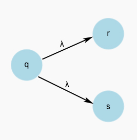
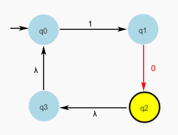
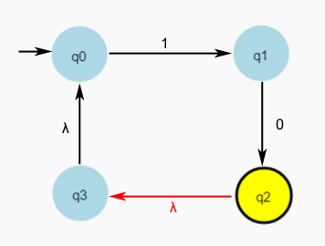
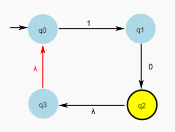

Un Autómata Finito No Determinista (AFND) es una quíntupla:
Los AFNDs presentan las mismas características que los AFDs salvo en lo que respecta al determinismo:
| Tiene un comportamiento no determinista: el cambio de estado interno no está unívocamente determinado por el estado actual y el símbolo leído en el dispositivo de entrada. |
El no determinismo de los AFNDs se traduce en las tres siguientes diferencias fundamentales respecto a los AFDs:
| Los pares (estado, símbolo de entrada) pueden tener asociado más de un estado siguiente. Ej.: f(q,a) = {p,q,r} |
|
|
 |
Los estados pueden transitar a otros estados por sí mismos, sin necesidad de leer ningún símbolo de la cinta de entrada.
Estas transiciones se llaman transiciones λ (lamda). Ej.: f(q, λ) = {r,s} Ej.: f(q,a) = {p,q,r} |
| Con la lectura de cada símbolo de entrada se pasa del conjunto de estado actual al conjunto de estados siguiente. Se hace teniendo no solo en cuenta las transiciones para el símbolo leído sino también las transiciones λ |
f(q,a) = Ø |
Al igual que los AFDs, los AFNDs se pueden representar tanto mediante una tabla como mediante un grafo de transiciones.
Es igual que la Tabla de transiciones de un AFD salvo que tiene una columna más a la derecha de la tabla, etiquetada con λ, en la que se reflejan los valores de las transiciones λ, es decir, los valores f(qi, λ), i ∈ {0, ..., n}.
Cada transición de la forma f(qi , a) = {qi1, . . . , qini }, i, i1, . . . , ini ∈ {0, . . . , n}, a ∈ Σ ∪ {λ}, da lugar a ni arcos dirigidos desde el nodo qi hacia cada uno de los nodos qi1, . . . , qini , etiquetados todos ellos con el símbolo a.
A1 = {q0, q1, q2, q3}, {0, 1}, f, q0, {q2, q3}, siendo f :
f(q0, a) = {q1, q3}, f(q0, b) = ∅, f(q0, λ) = ∅
f(q1, a) = ∅, f(q1, b) = q2, f(q1, λ) = ∅
f(q2, a) = ∅, f(q2, b) = ∅, f(q2, λ) = q1
f(q3, a) = q0, f(q3, b) = q3, f(q3, λ) = ∅
| A1 | a | b | λ | |
|---|---|---|---|---|
| q0 | {q1, q3} | |||
| q1 | {q2} | |||
| q2 | {q1} | |||
| q3 | {q0} |
A2 =({q0, q1, q2, q3}, {0, 1}, f, q0, {q2}, siendo f :
f(q0, 0) = ∅, f(q0, 1) = {q1}, f(q0, λ) = q2
f(q1, 0) = {q2}, f(q1, 1) = ∅, f(q1, λ) = ∅
f(q2, 0) = ∅, f(q2, 1) = ∅, f(q2, λ) = {q3}
f(q3, 0) = ∅, f(q3, 1) = ∅, f(q3, λ) = {q0}
| A2 | 0 | 1 | λ | |
|---|---|---|---|---|
| q0 | {q1} | |||
| q1 | {q2} | |||
| q2 | {q3} | |||
| q3 | {q0} |
Inicio:
El conjunto de estados internos asociado con el AFND contiene el estado inicial y todos a los que puede
llegar desde él mediante transiciones λ; el cabezal de lectura está situado en la posición más a la izquierda
de la cinta de entrada.
Mientras haya símbolos por leer en la cinta de entrada y el conjunto de estados actual asociado con el AFND no sea vacío:
Fin. La salida del AFND es:
1010
1010

10(λ)10

10(λ)10

1010
1010
101
101
101
101
101